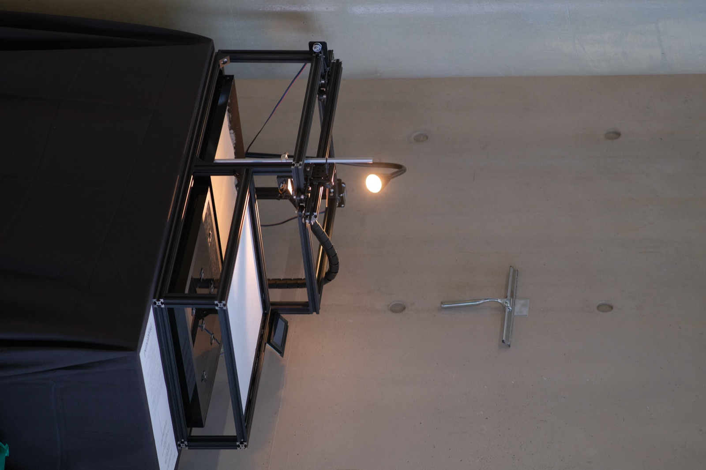
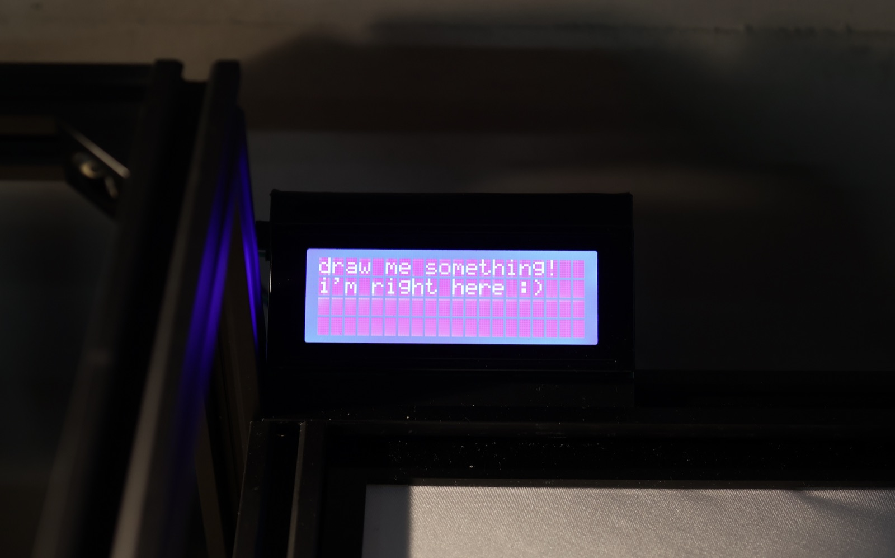
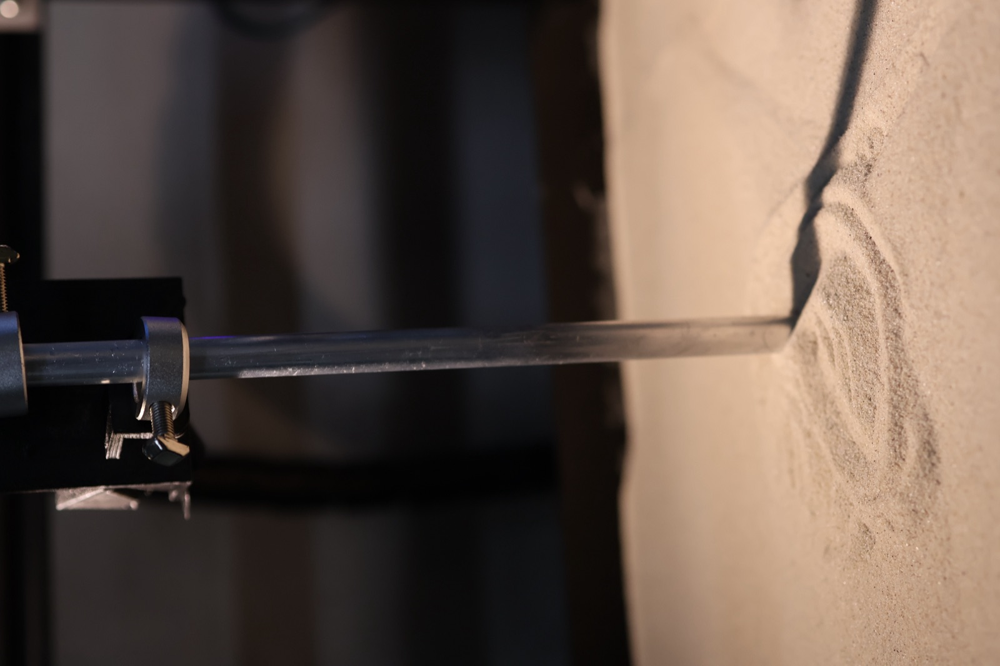

Interactive Installation · 2026
Playground ( PLAYGROUND )

Touch × Sand: A Physical Interface
Playground explores the boundary between physical material and digital feedback. Beneath a sheet of elastic fabric, an array of ToF sensors tracks a visitor's drawing in units of pressure and speed. The machine recreates in sand the gestures it feels through its own skin, and — continuing from the drawing style it has learned — adds its own lines behind yours.
A turn runs in six steps. The sand starts flat. A finger presses and moves, and the sensors build a trajectory. On lift, the trajectory is measured and a description appears on the display. The arm retraces the line in sand, then draws a short sequence of its own in an empty area. The visitor smooths the sand flat again. Nothing is saved, nothing is uploaded, and the installation never connects to a network.


Two axes, not a picture
Nothing in the system classifies what was drawn. Once the finger lifts, the whole trajectory is measured on two axes: pressure, how far the fabric was pushed down, and speed, how fast the finger moved along the line.
Those two values select one of a small set of descriptions, which is printed on the display beside the tray. They also set two parameters of the reply: pressure becomes groove depth in the sand, and speed becomes the pace at which the arm draws.
Sensing, understanding, answering
A stretchable cloth is pulled over an aluminium frame. Beneath it, a square grid of time-of-flight distance sensors faces upward, each measuring the gap to the fabric above it. When a finger presses, the cloth dips toward the sensor and that gap shrinks: the amount becomes pressure, and the pattern across neighbouring sensors becomes position. An ESP32 runs the array over a shared I2C bus and streams the readings out.
A small stick PC does the interpreting. It filters and fits the noisy samples into one continuous line, analyses the finished gesture for speed and pressure, and composes the reply: gantry coordinates, depths, and an empty patch of sand to answer in. It runs headless and offline for the whole exhibition.
The reply is drawn by an XY gantry over a shallow tray of fine sand. Two stepper motors carry the drawing head along X and Y; a servo raises and lowers it, so a hard press in the fabric becomes a deep groove and a light touch a shallow one. The head follows the reconstructed line point by point, interpolating between them so curves come out smooth rather than as visible straight segments. A 20 by 4 character display beside the tray prints the descriptions.
From Material to Interaction
Human skin receives stimuli not through a continuous surface but through touch receptors scattered at intervals, and the brain stitches those discontinuous signals into a single sensation. The way this machine perceives a drawing mirrors that same human sense of touch.
As it redraws the gesture in sand, the machine reads whether it was soft or rough, quick or slow, and passes that impression to the screen. It isn't trying to guess what you drew, but to sense how you felt while drawing it. All of this unfolds gently, without hurry.
Three problems took the most iteration, and all three were tuned against real drawings on the real fabric rather than in simulation. Catching a light, continuous press across a soft surface, which is what decided the sensor count and the grid layout. Keeping the reconstructed line faithful without over-smoothing away its character. And getting the gantry to draw genuine curves without stalling, by interpolating between points and tuning the motor timing.
The reconstruction is the crux. With sensors on a grid, a reading that leans too hard toward whichever sensor happens to be closest will bend straight lines and pull shapes toward the sensor points. A square grid was chosen precisely because it makes that distortion symmetric, and therefore correctable.
What the Hands Know
The work began with two games. Tracing a shape on a friend's back with a fingertip and waiting for them to guess, never quite sure it arrived intact. And drawing in sand, knowing it would be smoothed away. Both were ways of speaking before we had the right words, and both were gone almost as soon as they were made.
A scanner and a plotter could have copied the drawing exactly. It was deliberately not built that way. A mirror returns you to yourself; a translation risks getting something wrong, and in that risk there is the possibility of being met by something that is not you.
Touch receptors in skin are scattered, each responding only to its own small region, and the brain combines them into one sensation. The sensor array works the same way, so the roughness of its reading is not a defect to be corrected.
And in the end, the marks in the sand are erased — following the unspoken rule of every playground.